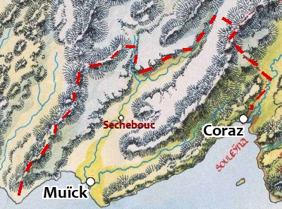

Le fief de Muïck
Le fief de Muïck est un territoire indépendant des provinces qui s'étend sur deux vallées et les montagnes environnantes. À l'est se trouve la vallée des Vents, traversée par la rivière Sonnerone, et à l'ouest se trouve la Tranchée du Titan, traversée par la rivière Muïck. La crête des montagnes à l'ouest en délimite la frontière occidentale.
Le fief a été fondé il y a 150 ans par un émigré agramorien, le chevalier Sigismond Tête d'étoupe, qui l'a gagné de haute lutte sur les barbares du clan du Corbeau et, par la suite, sur les tribus humanoïdes venues du nord. Aujourd'hui, la vallée est dirigée par le chevalier Osmond, illustre descendant du conquérant précédemment cité. L'homme se dit baron et parle de la baronnie de Muïck. Mais ce titre n'ayant jamais été accordé de manière officielle par le royaume, dans les archives Muïck n'est que le fief du chevalier Osmond, homme à la poigne de fer, quel que soit son titre, sous l'autorité de la cité sainte.
Le fief se compose de la cité de Muïck (3670 habitants), de celle de Coraz (2570 habitants) et d'un peu plus d'une dizaine de villages, dont le plus grand est Sechebouc. Si de nombreuses fermes isolées parsèment la Tranchée du Titan, la vallée des Vents est pour sa part presque abandonnée, car trop venteuse pour permettre la culture, et trop fréquentée par des créatures mauvaises pour y pratiquer l'élevage. Jadis, on y trouvait un village nommé Corlac en bordure de ce qui est la seule piste terrestre reliant Muïck à Coraz, le long de la Sonnerone, mais il a mystérieusement disparu il y a près de 100 ans, et depuis l'endroit n'est plus fréquenté que par de très rares marchands qui veulent éviter les taxes sur le commerce lacustre, par des chasseurs solitaires et des repris de justice. Il n'est pas rare d'y tomber sur des trolls en maraude ou des géants des collines. Le fief vit de la pêche, des taxes sur le commerce lacustre et de l'élevage de vaches à longs poils. Depuis peu, des prospecteurs fouillent les montagnes à la recherche de filons d'argent et de cuivre, ce qui procure un surplus de richesse par le biais des taxes prélevées sur ces nouveaux échanges. Les paysans pratiquent aussi un peu la culture de l'orge, qui leur permet de brasser une bière qui s'exporte jusqu'à la cité sainte, et du chanvre.
Les barbares
Le chevalier Osmond
Les barbares du clan du Corbeau qui ne se sont pas convertis au commerce vivent maintenant au nord-est de Muïck, sur les contreforts montagneux. Ils n'aiment guère ceux qui les ont jadis chassés de leurs terres et rêvent de prendre un jour leur revanche. Ils opèrent de temps en temps des raids, au printemps, sur les fermes isolées, ce qui a contraint le « baron » à former une petite armée très mobile de patrouilleurs ruraux, parfois renforcés de mercenaires et d'aventuriers engagés pour l'occasion. Chaque village possède aussi une milice locale, armée et entraînée par les hommes d'armes d'Osmond. Mais, peu efficace, elle ne sert guère qu'à décourager les brigands.
Les contrebandiers
Actuellement, le souci principal du chevalier Osmond est d'éradiquer la contrebande d'armes à destination des tribus barbares du nord, et de juguler le trafic de peaux d'animaux (loups, ours, marmottes) qui sévit depuis les montagnes. Une organisation mafieuse, qui se fait appeler l'organisation du Scorpion, semble être à la tête de ce trafic juteux. Selon des rumeurs persistantes, ces derniers seraient basés aux alentours de Sechebouc et nourriraient l'espoir secret de renverser le « baron » pour transformer la cité de Muïck en une réplique de Bental sur cette rive du lac. Ils recruteraient déjà massivement des barbares et des humanoïdes pour faire des coups de main dans le fief. Aucun des espions envoyés par le baron pour identifier les chefs de l'organisation n'est revenu.
La vallée des Vents
ORLAND ET L'ANOMALIE TEMPORELLE
Le druide Orland Fargish est au courant de la présence de l'anomalie temporelle de Corlac chaque année, mais n'a jamais réussi à en percer le secret.
La vallée des Vents se trouve à l'est de la cité de Muïck, où elle débouche, trouvant son origine dans les montagnes qui bordent le matriarcat d'Olizya. Cette vallée, étroite et sombre, est balayée par de puissantes bourrasques de vents qui s'y engouffrent depuis le nord-est. Les pentes sont abruptes et couvertes de grands sapins. Elle n'est quasiment pas habitée, et les seuls êtres qu'on peut y croiser sont des chasseurs solitaires, des repris de justice, ou de rares marchands qui empruntent l'ancienne route vers Coraz. Un druide nommé Orland Fargish y a établi son bosquet sacré. On peut parfois le croiser, mais ce dernier est peu liant et ne fait rien pour que la vallée soit de nouveau attirante pour les humains. Une rivière aux eaux rapides et glacées, la Sonnerone, la traverse et se jette dans le lac à hauteur de Muïck. Le val est giboyeux, ce qui attire de nombreux prédateurs redoutables qui descendent des montagnes, parmi lesquels on peut citer des trolls et des géants des collines. Officiellement, toute la vallée fait partie du fief de Muïck, mais comme elle est maintenant désertée, le chevalier Osmond ne s'en préoccupe guère. Ses patrouilleurs ruraux ne s'y aventurent donc que pour traquer les créatures monstrueuses quand celles-ci s'approchent trop de la ville.
L'ancienne route
L'ancienne route qui reliait Muïck et Coraz n'est plus aujourd'hui qu'un chemin troué d'ornières et n'est plus entretenue depuis que le village de Corlac a mystérieusement disparu il y a près d'un siècle. C'était une étape incontournable pour les voyageurs et les marchands, mais depuis ce jour la vallée a très mauvaise réputation, et tous ceux qui le peuvent l'évitent. Les rares convois qui s'y aventurent encore le font pour éviter les lourdes taxes prélevées aux ports par les autorités de Muïck sur le trafic lacustre entre Corlac et Muïck. Ces marchands savent qu'en empruntant l'ancienne route ils s'aventurent sur un chemin dangereux, et font donc fréquemment appel à de bonnes volontés, qui se font malheureusement de plus en plus rares, pour les escorter. Au fond de la vallée, juste avant de redescendre sur la cité de Coraz, à la frontière du matriarcat, se trouve le col de Jalapa. C'est le lieu de prédilection pour les embuscades que tend un clan de géants des collines venus du nord. Leur chef se nomme Gorbash l'Éventreur.
Le village de Corlac
LE CLERC DE LATHANDRE
Le corps du clerc de Lathandre a été balancé dans une fosse à immondices en bordure du village. Le sablier se trouve lui dans sa châsse, sous le lit de l'aubergiste.
Corlac est un petit village de quelques centaine d'âmes qui a été maudit par Lathandre, dieu de la naissance et du renouvellement, il y a un peu plus de 100 ans, suite au meurtre d'un saint homme de cette divinité par les villageois. Pour se venger d'eux, il a retiré le village de ce plan d'existence, à l'insu des habitants, et l'a enfermé dans une boucle temporelle. Ainsi, Corlac ne réapparaît qu'une fois par an, piégeant parfois d'innocents voyageurs qui s'arrêtent à l'auberge de la Grande Route. S'ils ne sont pas tués par les villageois, qui sont des détrousseurs notoires, ils deviennent fous.
Le chef des détrousseurs, qui se trouve être l'aubergiste, se nomme Le Jambier. Il est secondé par Tanja, sa ravissante fille, et par Argamis, un occultiste qui a vendu son âme à un obscur démon et qui manipule en fait l'aubergiste pour assouvir les désirs de son maître maléfique. Tous les habitants du village sont donc complices.
Depuis que ceux-ci ont perpétré leur ignoble forfait, le fantôme du clerc de Lathandre rôde dans le village quand vient la nuit. Les maudits sont insensibles à ses pouvoirs, mais pas d'éventuels voyageurs. Toutefois, le fantôme n'est pas maléfique et ne veut qu'une seule chose, qu'on lui donne une sépulture digne et que l'on reprenne à ses assassins, pour la rendre à son culte, une sainte relique : un sablier d'or et d'argent rempli de poussière de diamants. C'est ce qu'il s'efforcera de faire comprendre à des visiteurs piégés dans cette singularité temporelle, plutôt que de les faire fuir.
Écrit par Bredon, revu par blueace